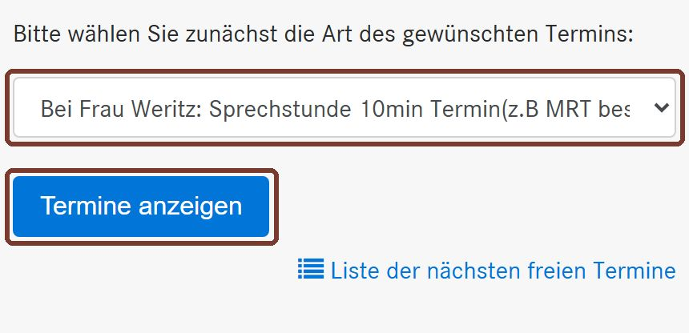
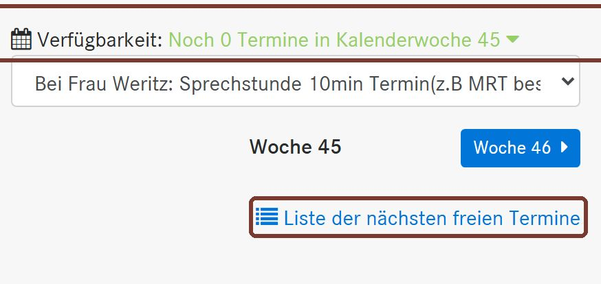
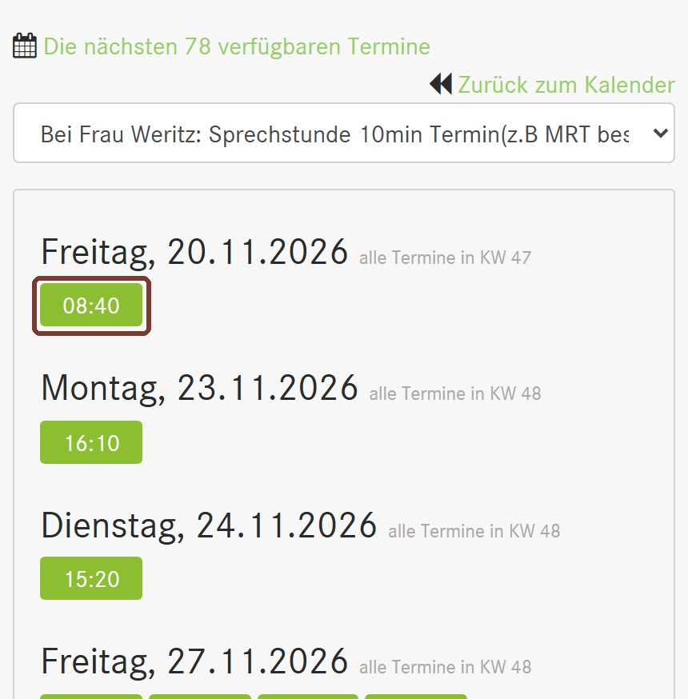
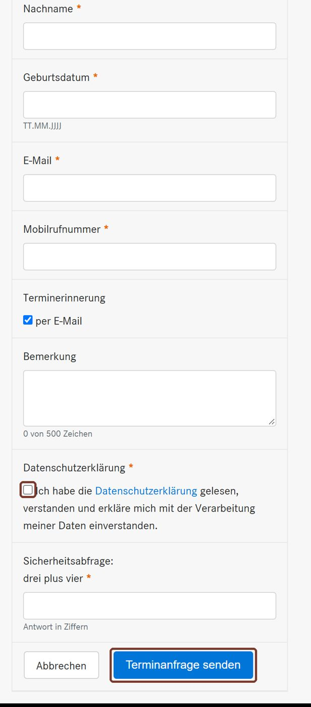

Online-Termin Schritt für Schritt
So buchen Sie einen Termin über DocVisit, den Kalender der Praxis. Das gilt für Patientinnen und Patienten der Praxis. Neu bei uns?
Erst ganz lesen. Der Kalender öffnet sich in einem neuen Fenster. Diese Seite bleibt offen.
Terminart wählen
Wählen Sie Ihren Standort und im Feld die passende Terminart. Tippen Sie dann auf Termine anzeigen.
Kalender Wettringener Straße Kalender Schilden

Beispielansicht DocVisit, Quelle: docvisit.de Freien Termin finden
Sie sehen die aktuelle Woche. Steht dort „Noch 0 Termine“, ist diese Woche nichts frei. Tippen Sie unten auf Liste der nächsten freien Termine.

Beispielansicht DocVisit, Quelle: docvisit.de Uhrzeit antippen
Die Liste zeigt die nächsten freien Tage. Tippen Sie auf die gewünschte Uhrzeit.

Beispielansicht DocVisit, Quelle: docvisit.de Daten eintragen und senden
Pflichtfelder sind Anrede, Vorname, Nachname, Geburtsdatum, E-Mail und Mobilnummer. Setzen Sie den Haken bei der Datenschutzerklärung, lösen Sie die kleine Rechenaufgabe und tippen Sie auf Terminanfrage senden.

Beispielansicht DocVisit, Quelle: docvisit.de
Welche Terminart passt?
- Sprechstunde (Wettringener Straße, bei Frau Weritz oder Frau Schön): bis zu 10 Minuten, zum Beispiel für Gelenkbeschwerden oder um ein MRT zu besprechen
- Akutsprechstunde (Schilden): bis zu 10 Minuten, für kurze Anliegen
- Infektsprechstunde (beide): bei Husten, Schnupfen, Fieber oder Magen-Darm-Infekt, bitte mit Maske
- Check-up (Wettringener Straße, bei Frau Weritz): Buchen Sie zusätzlich eine Blutentnahme eine Woche vorher
- Blutentnahme (Wettringener Straße): nur zusammen mit einem Check-up oder wenn sie ärztlich angeordnet ist
- Impfung (Wettringener Straße): Geben Sie unter Bemerkung an, welche Impfung. Am Schilden ist derzeit keine Terminvergabe nötig
- Kindervorsorge U3 bis U11, J1, J2 (Wettringener Straße, bei Frau Schön)
- Grippe- und Coronaimpfung (Wettringener Straße): Sonderimpftage
Neu bei uns?
Online-Termine sind Bestandspatienten vorbehalten. Anfrage stellen
Bitte denken Sie zum Termin an Ihre Versichertenkarte. Sie möchten doch lieber sprechen? Wettringener Straße 02556 9396-0, Schilden 02556 278.